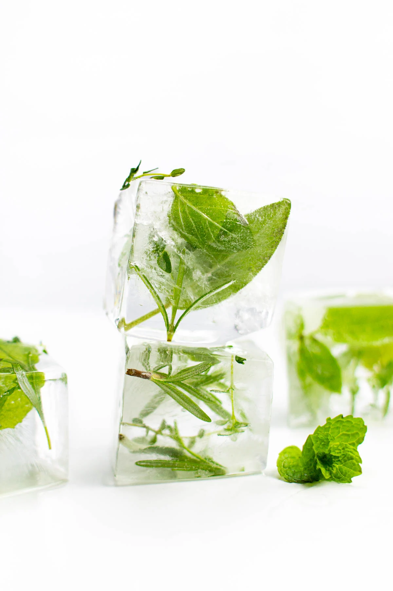

Ice Cubes
Home

Description
Ah, ice cubes. A wonderful date-night delicacy! This recipe will show you not only how to prepare such a treat, but how to present it with the flair it truly deserves.
WARNING: This recipe is not for those with sensitive teeth.
Steps
- Pour the water into a large mixing bowl.
- Place the mixing bowl in the freezer (if you live in the arctic, place outside for authentic ice).
- Remove the bowl from the cold when water is frozen.
- Remove the ice from the bowl.
- Using a hot butter-knife or a bandsaw, cut the ice down into cubes.
- Garnish with basil and enjoy. Serves 2.